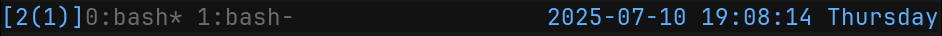
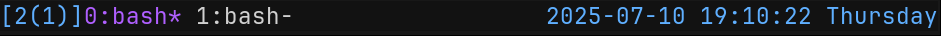
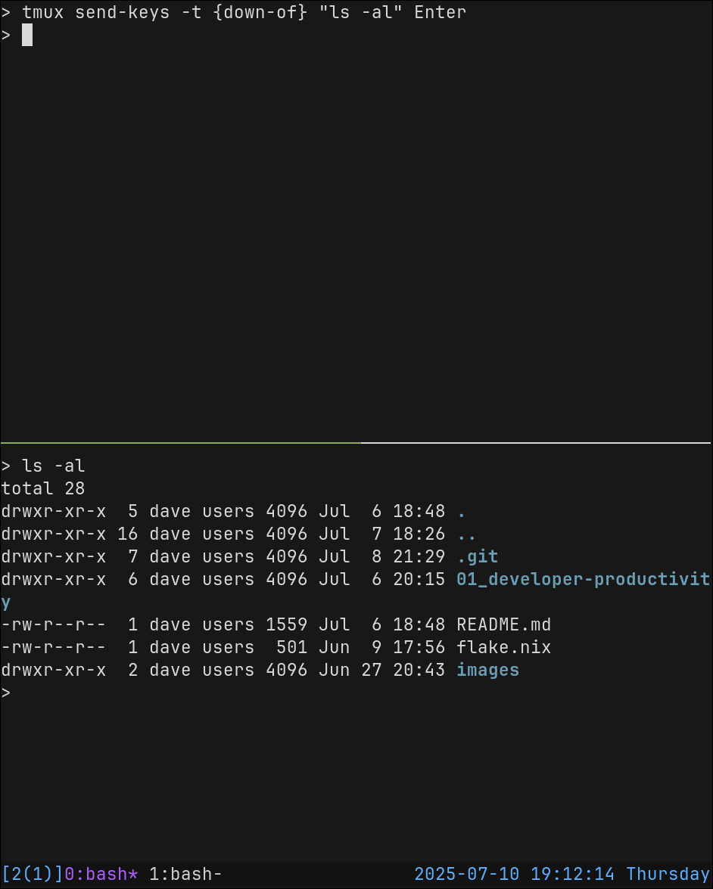

Tmux Configuration
Overview
You can copy the provided configuration file to ~.tmux.conf or ~/.config/tmux/tmux.conf and use it directly. It’s a pretty standard configuration and it’s short enough that we can walk through the whole thing, and you can change it to your taste.
Start by sourcing the Example tmux.conf into your current session:
- Copy the example config file to
~/.tmux.conf(or~/.config/tmux/tmux.conf). - In your open session, execute
C-b :to bring up the command prompt. - Type
source-file ~/.tmux.confand pressEnter/Returnto activate that configuration.
This config changes the prefix to C-a. Keep that in mind as you continue so you can translate any examples to the correct sequence.
The first customization I always make is to re-bind the prefix key. By default, it’s C-b (Ctrl+b). That’s kind of awkward to type, and feels like it’s probably bad for your wrist (on a US QWERTY keyboard).
You may like to re-bind the prefix to something like C-a or even “`” (backtick).
unbind C-b
set -g prefix C-a
bind C-a send-prefix
Using C-a is a little more comfortable, doesn’t typically conflict with other common keybindings, and matches the prefix idiom used by gnu-screen.
The idea behind using “`” was that it was a single-key prefix, which makes it easy to type, and it’s rarely typed in day-to-day work. If you do need to use it, you can hit “`” twice in a row. However, I find myself writing a lot more markdown with code sections, or other applications where I actually need to use “`”. So I typically use C-a myself.
I also like to bind a key to source the configuration file to apply recent changes:
unbind r
bind r source-file ~/.config/tmux/tmux.conf
I disable support for mouse selection and input, set the clock to 24-hour format, and set a large history limit. You may want to customize these:
set -g mouse off
setw -g clock-mode-style 24
set -g history-limit 50000
Status Line
The tmux status-line shows a list of active windows in your session, and indicates which one is selected.
It can also be configured to show useful information about your command, session, or system environment.
set -g status-style bg='#111111',fg='#676E7D'
set -g status-interval 1
set -g status-left '[#{session_name}] '
set -g status-right '%Y-%m-%d %T %A'
set-option -g status-position bottom

Format String
If you’ve ever configured a prompt-string for your shell, then you know how this works. Of course, tmux has it’s own system and syntax, different from that of zsh. But, just like configuring your zsh prompt, you probably only need to do it one time, and it’s not actually very hard.
You still supply a format-string, and certain characters and escape sequences will be replaced when the status line is rendered.
- Format variables are enclosed in
#{ ... }. Example:#{session_name}would be replaced with the name of the current session. - There is a ternary operator
${?VAR,TRUE,FALSE}. Example:#{?window_zoomed_flag,🔍,}would show a magnifying glass icon ifzoom modeis active, or nothing otherwise. - Shell commands can be included in
#( ... ). Example:#(uptime)would run theuptimecommand and render the output. - Style sections of the status line with
#[STYLES]. Example:#[fg=FFFFFF bg=000000 bold]would change the style to white foreground and black background, with bold text. - Use the style
defaultto reset to the defaultstatus-stylecolors from your configuration. Example:#[default].
Show current date and day of the week, in a blue color:
set -g status-right '#[fg=#4EA1FF]%Y-%m-%d %T %A'
# you might need to make the section max-width to make room
set -g status-right-length 40
Show the name of the current session (#S), the number of clients connected to the session in parentheses, in blue text. And show a magnifying glass on the left when zoom mode is active:
set -g status-left '#[fg=#4EA1FF]#{?window_zoomed_flag,🔍,}[#S(#{session_attached})]'
# you might need to make the section max-width to make room
set -g status-right-length 20

The default styles and colors are set by the status-style option. When you use #{default} to reset styles, this is what it will use as the default.
You can also set a different style for the active session “tab” on the status line with window-status-current-style.
set-option -g window-status-current-style fg=#BD5EFF

tmux-send-keys
You can run a command from one shell, and have tmux type the arguments into another pane.
This is a cool trick and can be very useful for scripting or making custom keybindings to coordinate things between multiple panes.
- Make sure you have at least one vertical split on your open
window(prefix "). - Navigate to the top pane with
prefix ↑. - Type the following command at the terminal:
tmux send-keys -t {down-of} "ls -al" Enter

Plugins and Alternatives
There are plugins for tmux, and even plugin managers. I’ve never used a tmux plugin myself but, if you are interested, here is a list.
There are a few alternatives to tmux that are worth mentioning:
gnu-screen(screen) is an older terminal multiplexer. It has fewer features, and doesn’t support splitting screens into multiplepanes, but you can have multiplewindowsand you can detach and re-attach to sessions. It’s frequently found on development servers, where you connect remotely viassh. If you work from withinscreen, then you can resume your session if the network connection is cut-off, or allow other users to join your session and pair.zellijis a newer, rust-based “workspace manager” that has many of the same features astmux. I’ve never used it, but it seems to be quite popular.ghosttyis a brand new terminal emulator that also allows you to make splits andwindows, but no support forsessionsyet.
I prefer to use a terminal emulator that doesn’t have splits or windows, like kitty, and use that with tmux for layout management.
References:
man tmux- https://github.com/tmux/tmux/wiki
- https://github.com/tmux/tmux/wiki/Installing
- https://github.com/tmux/tmux/wiki/Getting-Started
- https://tmuxreference.com/